دیکشنری (dictionary) نوع داده dictionary شبیه دفترچه تلفن است که هر نام با یک شمارهتلفن مرتبط است.
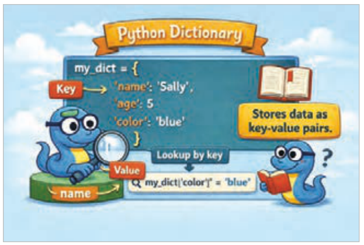
شکل ۱۰۴
دیکشنریها از تعدادی جفت کلید: مقدار (key:value) تشکیل شدهاند که به هر یک از آنها item گفته میشود. هر کلید به یک مقدار خاص اشاره دارد.
برای ایجاد dictionary آیتمها درون {} قرار گرفته و با کاما از یکدیگر جدا میشوند. همچنین هر کلید و مقدار آن با علامت دونقطه از هم جدا شده است.
در مثال شکل105 یک dictionary شامل سه آیتم (کلید و مقدار) به نام cardic تعریف شده است:
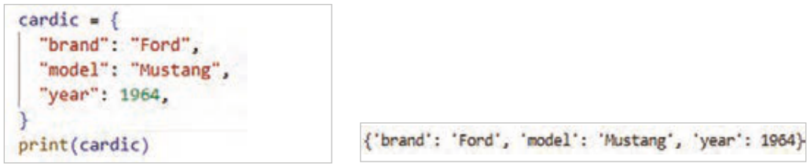
شکل ۱۰۵
برای دسترسی به یک مقدار در dictionary بعد از نام dictionary، کلید، داخل براکت [] قرار داده میشود (شکل106).
مثال: در کد شکل106 یک دیکشنری به نام person با 3 آیتم (کلید، مقدار) تعریف شده است. برای نمایش هر یک از عناصر داخل این دیکشنری از براکت [] استفاده شده است.
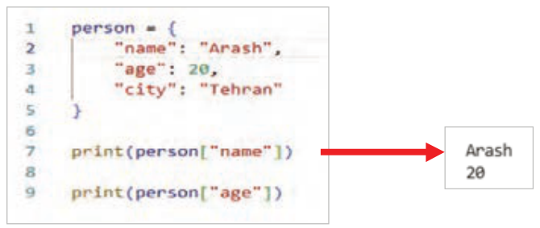
شکل ۱۰۶
صفحه ۵۳
کلیدهای متفاوت میتواند مقادیر یکسان داشته باشند.
مثال: دیکشنری status دارای دو آیتم است (شکل107).
آیتم اول: "user1":"active"
آیتم دوم: "user2":"active" کلیدها یکسان هستند ولی مقادیر هریک از آنها متفاوت است.
در dictionary کلیدهای یکسان نمیتوانند مقادیر یکسان داشته باشند. کلیدهای تکراری باعث بازنویسی مقدار قبلی میشوند، نه مقدارهای تکراری.
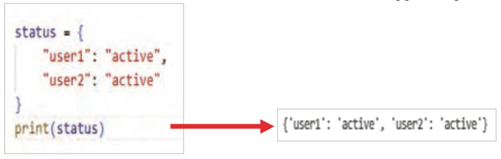
شکل ۱۰۷
در مثال شکل 108 دیکشنری car_dic دارای پنج آیتم است که دو تای آنها دارای کلیدهای با نام یکسان هستند. پس مقدار جدید به جای مقدار قبلی جایگزین میشود.
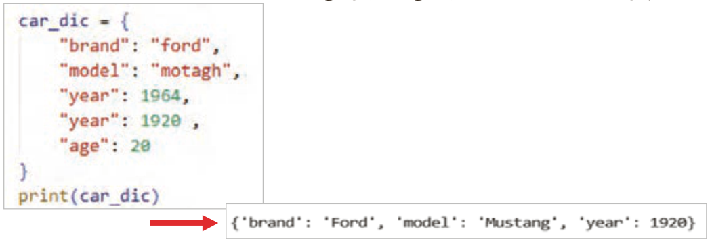
شکل ۱۰۸
صفحه ۵۴
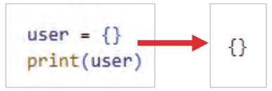
شکل ۱۰۹
برای ساخت یک dictionary خالی از {} استفاده میشود (شکل109).
مثال: یک دیکشنری خالی با نام user تعریف شده است.
اضافهکردن item جدید به dictionary
برای اضافهکردن یک عضو جدید به dictionary در پایتون، کافی است یک کلید جدید را مقداردهی کنید (شکل110).
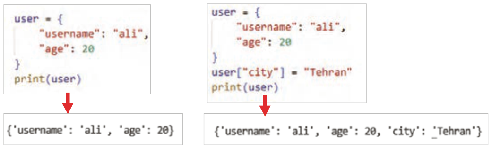
شکل ۱۱۰
مثال: یک dictionary خالی به نام student بسازید. سپس با استفاده از ورودی name و grade را به dictionary اضافه و در پایان دیکشنری را چاپ کنید (شکل111).
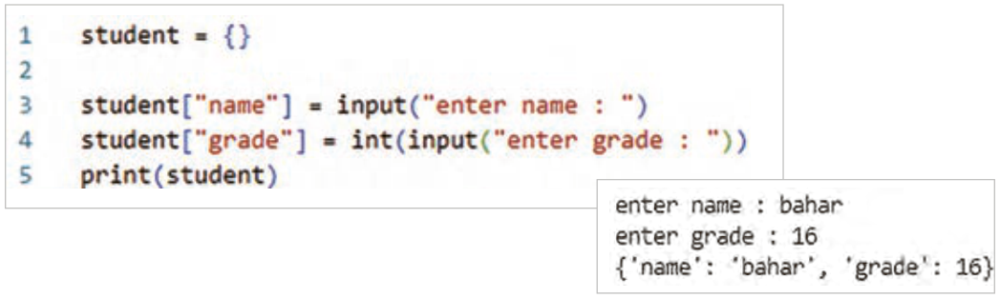
شکل ۱۱۱
صفحه ۵۵
حذف عنصر از dictionary: روشهای مختلفی برای حذف آیتم از dictionary وجود دارد ازآنجمله:
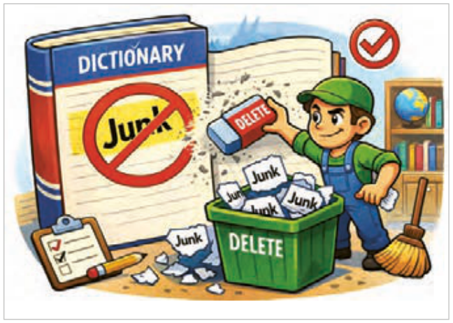
شکل ۱۱۲
در پایتون برای حذف یک آیتم از dictionary، از دستور del استفاده میشود. با این دستور، کلید و مقدار مربوط به آن به طور کامل از dictionary حذف میشود.
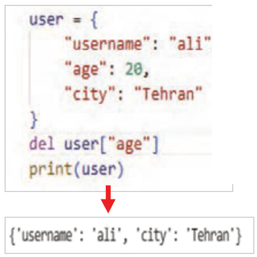
شکل ۱۱۳
مثال: در مثال کلید age و مقدار آن 20، از dictionary حذف شده است. برنامه را بنویسید و نتیجه را مشاهده کنید (شکل113). در برنامه مقابل برای حذف آیتم age": 20" از دستور del استفاده شده است. مشاهده میکنید که با این دستور کلید و مقدار آن حذف شدهاند.
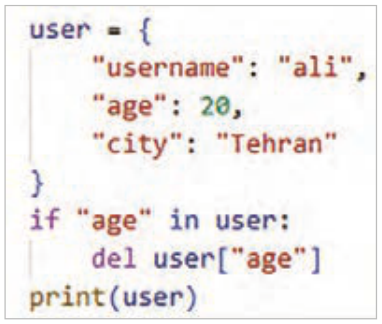
شکل ۱۱۴
درصورتیکه قصد حذف کلیدی را دارید که در dictionary وجود نداشته باشد، برنامه با خطا مواجه میشود؛ بنابراین قبل از حذف، باید وجود کلید بررسی شود. در برنامه مقابل برای جلوگیری از خطا پیش از حذف عنصر از لیست، وجود آن بررسی شده است. برنامه را وارد کرده و نتیجه را مشاهده کنید (شکل114).
صفحه ۵۶
برای حذف عنصر از dictionary میتوانید از متد pop() نیز استفاده کنید. متد pop()، عنصری که نام کلید مشخص شده را دارد، حذف میکند. dictionary.pop(key)
مثال: در کد (شکل115) عنصر "price " از دیکشنری product با استفاده از دستور product.pop("price") حذف شده است.
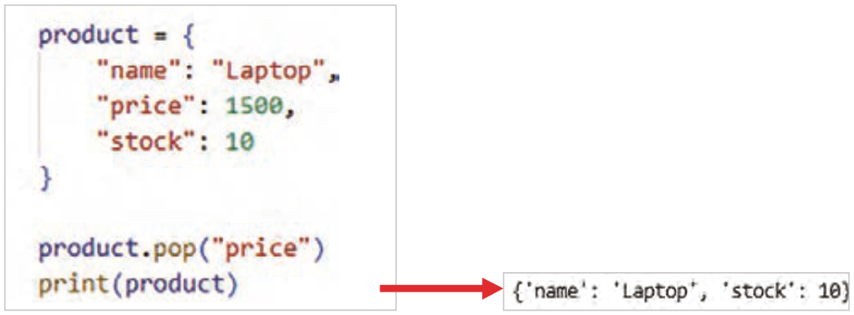
شکل ۱۱۵
متد pop() علاوه بر حذف آیتم، میتواند مقدار آیتم حذفشده را برگرداند (شکل116).
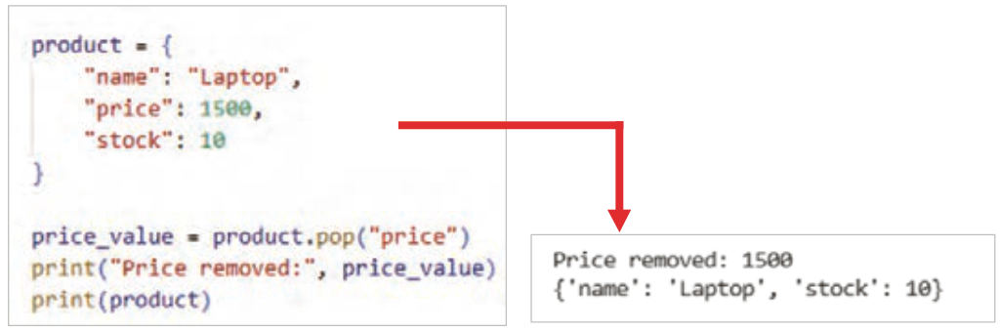
شکل ۱۱۶
Page 52
دیکشنری (dictionary) نوع داده dictionary شبیه دفترچه تلفن است که هر نام با یک شمارهتلفن مرتبط است.
Figure 104
Dictionaries are made of key: value pairs (key:value), each of which is called an item. Each key points to a particular value.
To create a dictionary, the items are put inside {} and separated by commas. Each key is separated from its value by a colon.
In the example in Figure 105, a dictionary named cardic with three items (key and value) is defined:
Figure 105
To get a value from a dictionary, write the key in square brackets [] after the dictionary's name (Figure 106).
Example: the code in Figure 106 defines a dictionary named person with 3 items (key, value). Square brackets [] are used to show each element of this dictionary.
Figure 106
Page 53
Different keys can have the same value.
Example: the dictionary status has two items (Figure 107).
First item: "user1":"active"
Second item: "user2":"active". The values are the same, but the keys are different.
In a dictionary the same key cannot hold two values. A repeated key overwrites the previous value; it does not add a second one.
Figure 107
In the example in Figure 108, the dictionary car_dic has five items, two of which have the same key name. So the new value replaces the previous one.
Figure 108
Page 54
Figure 109
{} is used to create an empty dictionary (Figure 109).
Example: an empty dictionary named user is defined.
Adding a new item to a dictionary
To add a new member to a dictionary in Python, just give a value to a new key (Figure 110).
Figure 110
Example: build an empty dictionary named student. Then add name and grade to it from the input, and finally print the dictionary (Figure 111).
Figure 111
Page 55
Removing an element from a dictionary: there are several ways to remove an item from a dictionary, including:
Figure 112
In Python, the del statement is used to remove an item from a dictionary. It removes the key and its value completely.
Figure 113
Example: in this example the key age and its value 20 are removed from the dictionary. Write the program and see the result (Figure 113). The program opposite uses del to remove the item age": 20". You can see that the key and its value are removed.
Figure 114
If you try to remove a key that is not in the dictionary, the program raises an error; so check that the key exists before removing it. The program opposite checks that the element exists before removing it, to avoid the error. Type in the program and see the result (Figure 114).
Page 56
To remove an element from a dictionary you can also use the pop() method. pop() removes the element with the given key. dictionary.pop(key)
Example: in the code (Figure 115) the element "price " is removed from the product dictionary with product.pop("price").
Figure 115
Besides removing the item, pop() can return the value of the removed item (Figure 116).